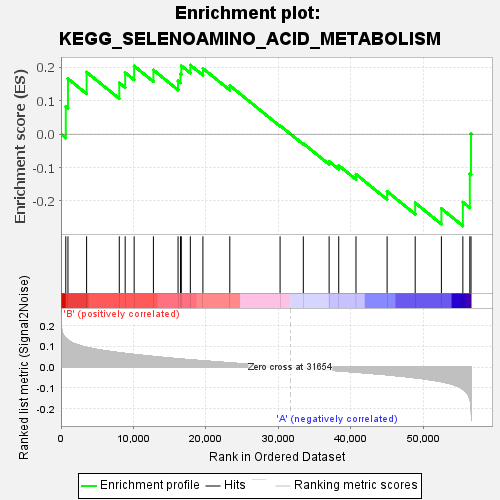
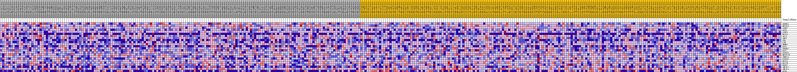
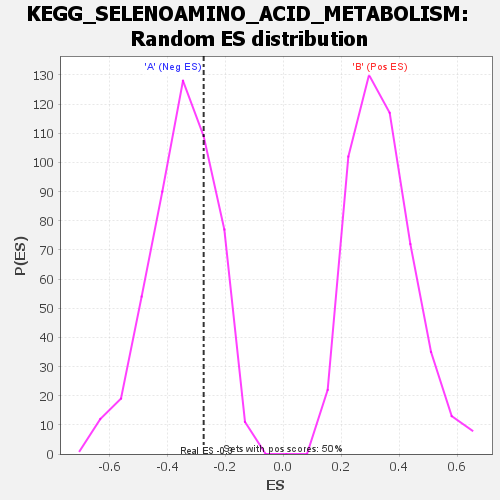

| | | Dataset | my.my.cls#B_versus_A.my.cls#B_versus_A_repos |
| Phenotype | my.cls#B_versus_A_repos |
| Upregulated in class | A |
| GeneSet | KEGG_SELENOAMINO_ACID_METABOLISM |
| Enrichment Score (ES) | -0.27512717 |
| Normalized Enrichment Score (NES) | -0.7887393 |
| Nominal p-value | 0.7245509 |
| FDR q-value | 0.73521155 |
| FWER p-Value | 1.0 |
Table: GSEA Results Summary

Fig 1: Enrichment plot: KEGG_SELENOAMINO_ACID_METABOLISM
Profile of the Running ES Score & Positions of GeneSet Members on the Rank Ordered List
| SYMBOL | TITLE | RANK IN GENE LIST | RANK METRIC SCORE | RUNNING ES | CORE ENRICHMENT | | 1 | SEPHS1 | na | 658 | 0.140 | 0.0830 | No |
| 2 | METTL6 | na | 959 | 0.131 | 0.1663 | No |
| 3 | LCMT2 | na | 3532 | 0.096 | 0.1860 | No |
| 4 | GGT5 | na | 8038 | 0.070 | 0.1538 | No |
| 5 | LCMT1 | na | 8851 | 0.067 | 0.1846 | No |
| 6 | MAT1A | na | 10089 | 0.061 | 0.2043 | No |
| 7 | SCLY | na | 12746 | 0.052 | 0.1924 | No |
| 8 | AHCY | na | 16146 | 0.040 | 0.1598 | No |
| 9 | CBS | na | 16481 | 0.039 | 0.1806 | No |
| 10 | CTH | na | 16595 | 0.039 | 0.2051 | No |
| 11 | HEMK1 | na | 17840 | 0.035 | 0.2071 | No |
| 12 | GGT1 | na | 19574 | 0.031 | 0.1973 | No |
| 13 | SEPHS2 | na | 23284 | 0.021 | 0.1459 | No |
| 14 | GGT7 | na | 30220 | 0.003 | 0.0257 | No |
| 15 | PAPSS1 | na | 33424 | -0.004 | -0.0279 | No |
| 16 | METTL2B | na | 36985 | -0.013 | -0.0818 | No |
| 17 | TRMT11 | na | 38310 | -0.017 | -0.0937 | No |
| 18 | PAPSS2 | na | 40690 | -0.023 | -0.1201 | No |
| 19 | MAT2A | na | 44983 | -0.036 | -0.1715 | No |
| 20 | MAT2B | na | 48856 | -0.050 | -0.2059 | No |
| 21 | MARS2 | na | 52471 | -0.069 | -0.2228 | Yes |
| 22 | AHCYL2 | na | 55431 | -0.105 | -0.2039 | Yes |
| 23 | AHCYL1 | na | 56392 | -0.150 | -0.1190 | Yes |
| 24 | GGT6 | na | 56557 | -0.182 | 0.0011 | Yes |
Table: GSEA details [plain text format]

Fig 2: KEGG_SELENOAMINO_ACID_METABOLISM
Blue-Pink O' Gram in the Space of the Analyzed GeneSet

Fig 3: KEGG_SELENOAMINO_ACID_METABOLISM: Random ES distribution
Gene set null distribution of ES for KEGG_SELENOAMINO_ACID_METABOLISM